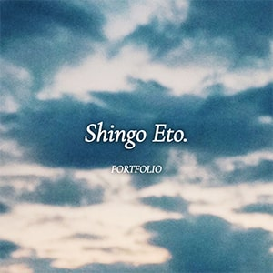
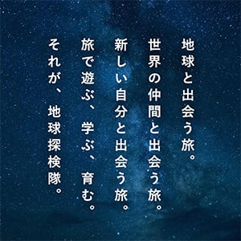
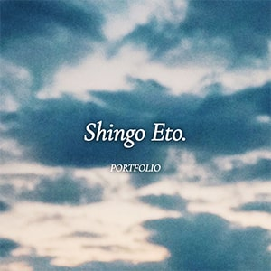
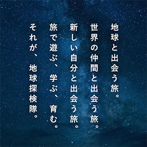
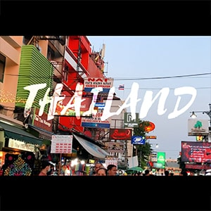
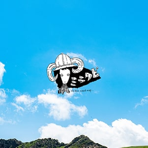
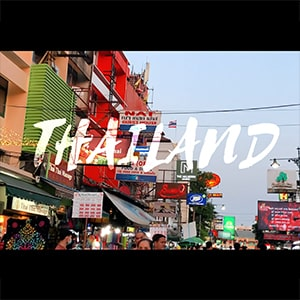
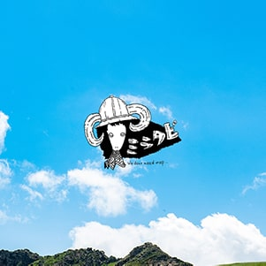

 





MY PORTFOLIO
shingoeto.com

web design / direction: shingo eto
photos: sherry / shingo eto
自身のポートフォリオサイトを作成しました。 デザイン面では余白を意識し、 シンプルで見やすい、ウェブ、動画、写真など、様々な作品で使えるようなポートフォリオサイトをイメージ。 メインヴィジュアルは印象に残すためにインパクトのある画像をチョイスしました。 フォントは、「Cormorant Infant」、「游ゴシック」を使用。 リッチなデザインにしようと思い、今回は英字はSerif体にしました。 「Cormorant Infant」はどのfont-styleでも使い勝手が良いと感じ、 「游ゴシック」は、文字間隔を空けたいと思った時に一番しっくりきました。 ナビゲーションの背景は、ロサンゼルスで撮影した動画をAdobe After Effectsで加工し、gif形式で設定。 Works.セクション・ページの作品詳細はVue.jsを用いてモーダルウィンドウを取り入れました。 また、jQueryを用いてフェードインアニメーションも実装しました。ゆっくりでも、 高速でもスクロールをされた時のフワッと感を演出したく数値を設定しました。
CHIKYU TANKENTAI
expl.co.jp
web design / direction: shingo eto
photos: manabu
html / scss / parcel / prettier
eslint / htmllint / stylelint / editor config
僕も隊員でもあり、様々な影響を与えてくれた地球探検隊のウェブサイトを制作しました。 デザインからコーディングまで担当。ターゲットは20代〜50代と広め。 中年の方にも見やすいシンプルなデザイン、若者が惹かれるキャッチーな文章を隊員なりに考えたりブログから引用・アレンジし、 地球探検隊らしさを掴んでいただきたいと思い文章を設定しました。

MIRATABI
miratabi.net
design: shingo eto
WordPressテーマ「Snow Monkey」を使用し、テンプレートからデザイン、 画像の編集等を担当しました。ターゲットの年齢層は30代〜60代と幅広め。 シンプルさを意識し、クリアなイメージで作成しました。 素材写真が、配色は、広大な青空と草原がイメージできるような配色にしました。